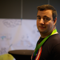

Erik Talboom
If one would have to describe Erik Talboom in one line, it would no doubt be “loves helping people”. Helping others seems to be his drive for as long as he can recall: back in school, Erik used to tutor his co-students. A skill that naturally brought him to a teaching career later on. In his early professional years, Erik worked as a software development teacher at the CVO Antwerp and Karel De Grote Hogeschool Antwerp, spending his spare time working as a freelance developer.
Soon, Erik chose the path of a fulltime developer, but teaching and helping others stuck with him. Therefore, he gradually focused on a different style of development: helping others develop their skills.
Throughout his life and work, Erik’s main characteristic is emotion: it guides his decisions, inspires and motivates him and proved to be a great strength on many occasions.
Using this emotional, helpful approach, Erik’s mission is to help teams and organizations by improving their way of collaborating, helping them getting things done and, basically, reaching their full potential by training sessions, meeting facilitation, individual coaching of team members and opposing different and fresh perspectives.
Being a passionate gamer on top of all this, Erik believes in enhancing work through play: improving your way of collaborating and working while having fun.
“You shouldn’t have fun at work: your work should be fun”, is what he stands for. His experience in board and computer games, role-play and as a game master serve their purpose in his coaching techniques. Assuming the role of game master in a work environment, Erik will facilitate meetings and brain storming, stimulate collaboration and co-learning and help channel creative energy.
Every team member has his or her preferred domain of specialisation, and while it is difficult to put Erik in one “box” as his profile and interests are so vast, one may say he is more focused on the individual level of coaching.
Website: http://https://co-learning.be/
Twitter: @talboomerik